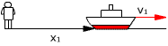
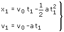
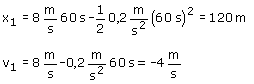

a)
Ecuaciones del movimiento:
|
|
|
Parámetros: v0 = 8 m/s , a = 0.2 m/s2 |

Aplicación:
Datos: t1 = 60 s, Incógnitas: x1 , v1
|  |
 |

El barco está 120 m a la derecha del observador, moviéndose
hacia la izquierda a 4 m/s.
Los motores funcionando marcha atrás detienen el barco, si no los
detienen, invierten el sentido de la marcha por eso al cabo de un minuto
el barco está navegando en sentido contrario al inicial.
Aunque el barco está a 120 m del observador ha recorrido más de 120 m porque ha avanzado hasta detenerse y después ha retrocedido hasta quedar a 120 m del observador. En movimientos de ida y vuelta el desplazamiento no es la diferencia entre las posiciones inicial y final